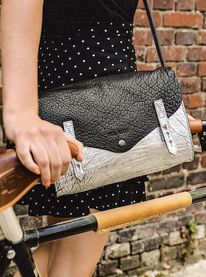
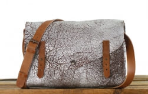

Emily's hand bag is directly inspired by the 1950s. In fact, this period marked a turning point in the history of fashion and after the Second World War, women wanted to be more elegant and adopted a more feminine look. Speciality :Its handle transforms into a shoulder strap, allowing you to wear it by hand, at the elbow, on the shoulder or as a shoulder bag. The leather chosen by L'Oeil Vintage may have slight markings or color variations, these nuances inherent to the skin and tanning are effects sought in order to offer a model with character.
Composition: 100% buffalo leather, corrected grain (exterior), Textile (Interior)/ Delivery 72h / Dimensions : 15 X 25 X 10 CM / Maintenance : SAPHIR universal cream, except leathers with metallic pigmentation: SAPHIR gel
